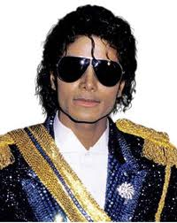
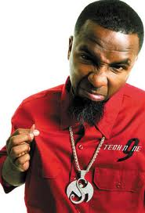
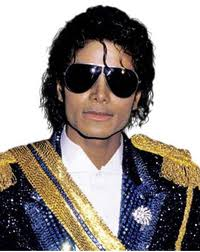
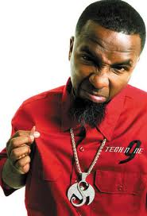

My Definition of freedom.
Freedom is for you to be able to do what you want when you want, to not be in contol by any outside forces and live your own life. Freedom is our right to live in the United States, happily.
Significant Items
12-05-2011
My Significant Quote.
"Only god knows what I been through man, so if you wanna talk get your facts straight first and if you really wanna know let me ask you somethin, have you ever walked in the shoes of a giant? Or had to fill the position of a boss before you were even a client?"
MGK (Machine Gun Kelly)
My Significant Quote.
"Only god knows what I been through man, so if you wanna talk get your facts straight first and if you really wanna know let me ask you somethin, have you ever walked in the shoes of a giant? Or had to fill the position of a boss before you were even a client?"
MGK (Machine Gun Kelly)
12-05-2011
A Significant Piece of Literature.
The Gift of Money
The Gift of Friends
The Gift of Learning
The Gift of Problems
The Gift of Family
The Gift of Laughter
The Gift of Dreams
The Gift of Giving
The Gift of Gratitude
The Gift of a Day
The Gift of Love
The Ultimate Gift
A Significant Piece of Literature.
The Ultimate Gift:
The Gift of WorkThe Gift of Money
The Gift of Friends
The Gift of Learning
The Gift of Problems
The Gift of Family
The Gift of Laughter
The Gift of Dreams
The Gift of Giving
The Gift of Gratitude
The Gift of a Day
The Gift of Love
The Ultimate Gift
12-05-2011
My Significant Movie.
My Significant Movie.
Never Back Down
Jake was a star athlete on the football team at home, but in this new city, he is an outsider with a reputation for being a quick tempered brawler after a video of him on the Internet starting a fight in a football game, because one of his opponents made a rash comment about Jake's dead father, circulates around his new school.Metamorphosis Design
My Definition of happiness.
Happiness is a long lasting enduring enjoyment of life, it is being in love with living. It is the mental state of positivity in yourself and others.
Happiness is a long lasting enduring enjoyment of life, it is being in love with living. It is the mental state of positivity in yourself and others.
 My prediction of technology 10 years from now.
My prediction of technology 10 years from now. 10 years from now we'll be signing data tablets instead of papers using our thumbnail. Although there are companies that do this already, it would probably be a common thing. Terrabytes will be the unit of data storage commonly use but the need for an increasing data storage will continue. There will also be an increase in internet connection. RAM speed will increase. Companies would still continue to use Blu ray seeing that they invested a huge amount of money converting old movies into this new technology. What's next though I believe are holographic discs. Japan has been expanding on this project to compete with the American market but I surmise in 2018, Holographic Versatile Disc will start its marketing campaign.
Personal
Your letter written to yourself.
Dear, Mitchell
First off if you are reading this you should feel good about it, because 1, you're reading something from yourself when you were 17 years old. Now to say this, if you are still playing hockey kudos points, if not I sure hope you are a doctor or something that interests you very much. Now rap music and car audio, you better still be into that because if you don't remember how much you loved that stuff when you were a teen then you need a refresher. I at this point don't know if you ever had a system actually installed in your car. But if you did, and it was loud, impressed people, and made people angry, then hey you did something you always wanted! Right now when you were writing this letter you were listening to the songs make it bounce, Wild Boy, and Bang Out, yea do you remember Tech? Your favorite Rapper. Oh well, as you said yourself Mitchell accomplishment is the greatest feeling you can have. So ask yourself, do you feel accomplished, knowing you made it to your 10 year school graduation, to remember some of your high school years?
Dear, Mitchell
First off if you are reading this you should feel good about it, because 1, you're reading something from yourself when you were 17 years old. Now to say this, if you are still playing hockey kudos points, if not I sure hope you are a doctor or something that interests you very much. Now rap music and car audio, you better still be into that because if you don't remember how much you loved that stuff when you were a teen then you need a refresher. I at this point don't know if you ever had a system actually installed in your car. But if you did, and it was loud, impressed people, and made people angry, then hey you did something you always wanted! Right now when you were writing this letter you were listening to the songs make it bounce, Wild Boy, and Bang Out, yea do you remember Tech? Your favorite Rapper. Oh well, as you said yourself Mitchell accomplishment is the greatest feeling you can have. So ask yourself, do you feel accomplished, knowing you made it to your 10 year school graduation, to remember some of your high school years?
5 Pop Culture Items
 


